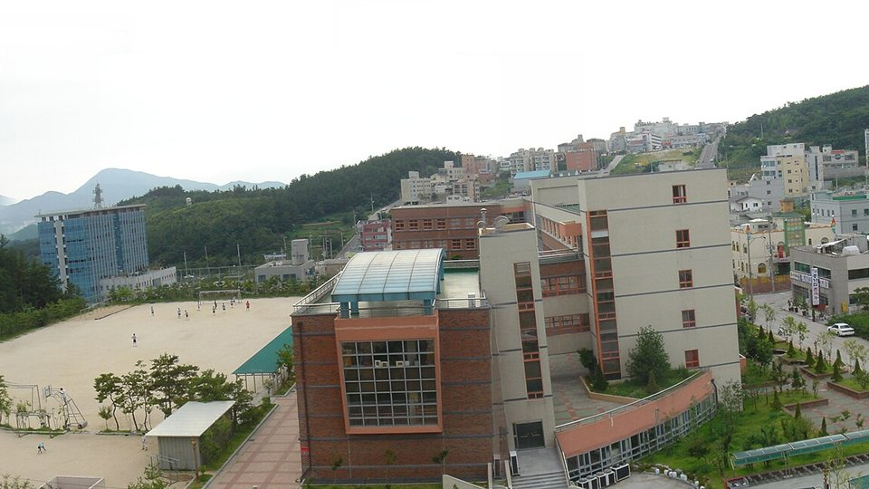

울산 중구는 관리 중인 학교가 42곳입니다. 고등학교가 10곳, 중학교가 11곳이고, 학성고·성신고·울산중앙고·함월고·약사고 같은 고등학교와 울산제일중·유곡중·다운중 같은 중학교가 구 안에 흩어져 있습니다. 같은 구라도 학교마다 진도와 프린트가 달라서, 학원 반 진도와 맞지 않는 학생은 집으로 오는 1:1 영어과외나 과학과외를 따로 찾게 됩니다.
오늘은 울산 중구로 직접 찾아가는 선생님 4명 중 두 분을 소개합니다. 한 분은 영어를 중심으로 수학까지 보는 선생님, 한 분은 중학교 과학부터 고등 지구과학까지 보는 선생님입니다. 두 분 모두 방문과 화상 수업이 가능합니다.
우정동 쪽에서 고등 영어과외로 내신과 수능을 함께 준비하고 싶을 때 맞는 선생님입니다. 중상위권 학생을 주로 맡고, 수업은 가르치는 시간이 대부분(티칭 80, 코칭 20)입니다. 오답노트를 체계적으로 관리하고, 수업 녹화본으로 복습하게 해 배운 내용을 다시 확인하도록 합니다.
혼내기보다 칭찬과 격려로 동기를 끌어내는 수업을 지향합니다. 수업 전에는 숙제를 사진으로 검사하고, 수업 뒤에는 카톡으로 숙제를 알려 주며, 매 수업 후 진행 내용을 학부모님께 리포트로 보냅니다. 플래너로 공부 습관을 관리하고 진로·입시 상담도 함께합니다. 영어와 수학을 한 선생님에게 맡기고 싶은 초등 고학년·중학생에게도 선택지가 됩니다.
최ㅇ현 선생님 상세 프로필 →태화동 쪽에서 중학생 과학과외나 고1 통합과학을 방문으로 받고 싶을 때 맞는 선생님입니다. 사범대학 지구과학교육과를 졸업했고, 고등학교에서 2년 6개월 근무하며 방과후학교 소수 그룹 수업을 맡았습니다. 중학교 과학부터 고1 통합과학, 고등 지구과학까지 수업합니다.
학교에서 내신 문제 출제와 수행평가, 학교생활기록부 작성을 해 본 경험을 바탕으로 시험 준비와 수행평가·생기부 관리를 함께 봅니다. 중상위권·최상위권 학생을 주로 맡고, 학교 원격 수업 경험이 있어 화상 수업도 가능합니다. 중학생은 수학도 함께 수업할 수 있습니다.
양ㅇ재 선생님 상세 프로필 →학교마다 진도와 시험 범위가 달라서, 학교별로 준비법을 따로 정리해 두었습니다.
👉 울산 중구 영어과외 선생님 · 울산 중구 과학과외 선생님 · 관리 학교 42곳 전체 보기